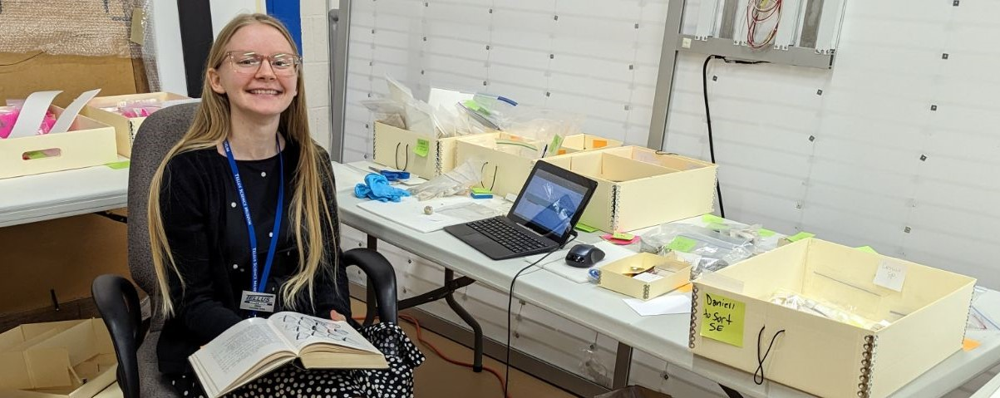
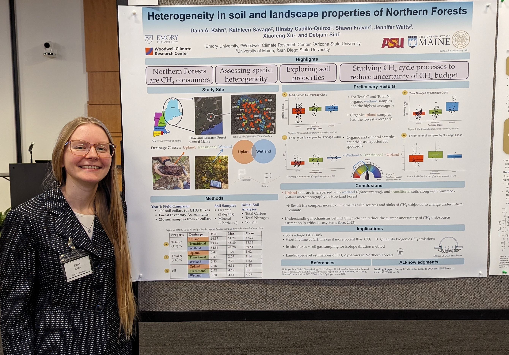

Science
Graduate Research
Current Projects
Spatially Mapping Methane Cycle Processes in Northern Forests (June 2023 - Present)
Conduct field work in Howland Research Forest, a sub-boreal forest in central Maine. Collected soil samples for microbial and biogeochemical analyses
Analyze gravimetric soil moisture, Total Carbon and Total Nitrogen, Microbial Biomass with Chloroform Fumigation Technique and Soil pH
.jpg)
.jpg)
Past Projects
Curating collections at the Tellus Science Museum (May 2023 - August 2023)
Organized, cataloged, and photographed 1500+ specimens and identified Mazon Creek, IL fossil invertebrates
Collaborated with curator to identify 2000 new acquisitions and designated permanent and non-permanent fossils

Honors
Honorable Mention, National Science Foundation (NSF) Graduate Research Fellowship Program (GRFP)
Lester Research Grant ($7000 total), Emory University Department of Environmental Sciences
C2C Fellows Sustainability Leader, Bard Center for Environmental Policy
.jpg)
Outreach
Media
Poster Presentation at Southeastern Biogeochemistry Symposium, Georgia State University (April 2023) 
Restoring Earth through Science and Songs, Emory Climate Talks blog
Professional Associations
Graduate Women in Science (GWIS), Soil Science Society of America (SSSA), American Geophysical Union (AGU), Solid Waste Association of America (SWANA), Society for the Preservation of Natural History Collections (SPNHC)
Undergraduate Research
Past Projects
Soil Heterogeneity on overall greenhouse gas fluxes with oxygen optodes associated with the Emory Biogeochemistry Lab
The Field Guide to the Gardens at the Shedd Aquarium
- Created the first field guide to the Shedd Aquarium gardens consisting of a 70-document that describes the Migratory Bird Garden and the garden’s history through interviews with staff members
Sustainability Club Toolkit and Library
- Designed a “How to make a sustainability club” guide with a digital library and curriculum resources tagged with Project Drawdown solutions and UN Sustainable Development Goals (SDGs)
Founder of Climate Reality Project: Emory University Chapter and Emory Climate Coalition
Characterizing the electromagnetic and hydraulic properties of soil
University of Southern California National Science Foundation Research Experience for Undergrads (NSF REU) internship
Conducted environmental monitoring field work at the Institute of Ecosystem Studies and installed soil senor network to collect temperature, matric potential, and dielectric constant or organic soil
Honors
Enchanted Wings Scholarship, Alpha Nu Chapter of Theta Nu Xi Multicultural Sorority Inc.
Ceres Global Scholarship Winner
Da Vinci Talks Finalist with IDEAS (Interdisciplinary Exploration and Scholarship) Week
Department of Environmental Sciences Green Career Internship Fund Award ($5000)
Publications
D. Kahn, “Restoring Earth through Science and Songs,” 15-Aug -2023. Emory Climate Talks. https://climatetalks.emory.edu/blog/restoring-earth-through-science-and-songs.
Akbar, R.; Silva, A.; Chen, R. H.; Golestani, N.; Bakian-Dogaheh, K.; Kannan, A.; Kahn, D.; Moghaddam, M.; Entekhabi,D., “Recent Progress and Development in Energy Efficient and Smart in situ Wireless Sensor Networks: SoilSCAPE,” vol. 2019, 2019. https://ui.adsabs.harvard.edu/abs/2019AGUFMIN23C..20A/abstract.
D. Kahn, “Encouraging Women in Science Programs: An Intern’s Perspective,” 30-Mar -2019. https://osf.io/q8cnz.
Mayer P.; Hodge K.; Kahn D.; Best M.; Dryer Y.; Pritza M.; Nelson J.; Wittry J. 2018 “Interns and Volunteers Crucial in Curating and Digitizing Fossil Invertebrates in the Field Museum’s Fast Growing Mazon Creek Collection,” Biodiversity Information Science and Standards 2: e25942. https://doi.org/10.3897/biss.2.25942.
© Dana Kahn, 2024. Created with RStudio and RMarkdown